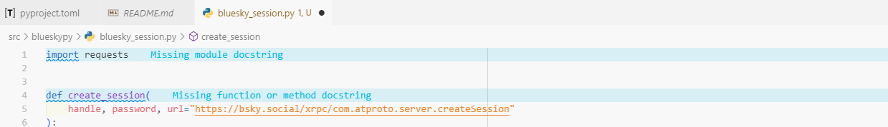
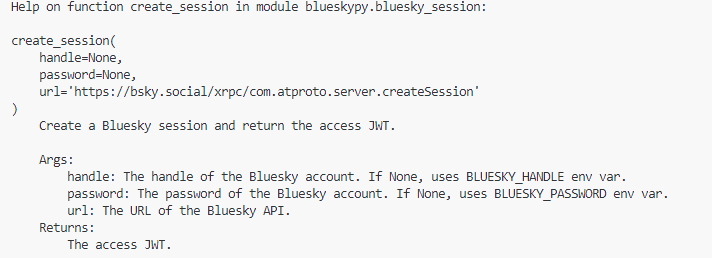
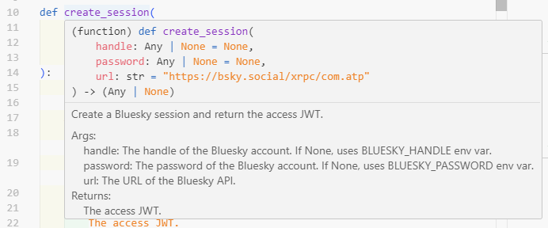

Developing a Python package when coming from R: experience feedback
I’ve learned a lot by developing and contributing to various R packages over the years. Without having (yet!) a personal package on CRAN, I use package development on a daily basis and have had the chance to train several colleagues or students in this practice. Once the fear of the first package is overcome, package development in R becomes fluid, especially thanks to a well-integrated ecosystem of tools: devtools, usethis, testthat, roxygen2, etc. And if you use RStudio, the many utilities accessible with a few clicks simplify life even further.
Wanting to improve my Python skills, I wanted to see if this reassuring framework also existed in Python by creating a small package project — a way to learn through direct comparison.
My Python experience is much more limited than my R experience, but I hope this feedback will be useful to you. Don’t hesitate to point out any errors or inaccuracies! 😀
Happy reading 🐍
Development tool choice
In recent months, I’ve seen many messages praising the uv tool as a Python environment and dependency manager. If I understand correctly, uv replaces both pip, venv, and to some extent poetry. It also offers several useful shortcuts for package development.
poetry could have been another option, but I haven’t had the opportunity to try it yet.
Package creation
In R, I often use usethis::create_package() to create a new package.
With uv, you can do the same thing with the following command:
uv init blueskypy --libThis creates a project structure similar to that of an R package:
blueskypy/
├── pyproject.toml
├── README.md
├── .gitignore
├── .python-version
└── src/
└── blueskypy/
├── __init__.py
└── py.typedR developers will recognize several familiar elements:
README.md: package description, installation, usage examples.
.gitignore: files to exclude from versioning.
src/: source files directory (equivalent to theR/folder in an R package).
pyproject.toml: metadata, dependencies, etc. (equivalent to theDESCRIPTIONfile).
Other files are specific to Python, py.typed and python-version.
Version control setup
In R, I rarely use usethis::use_git(), preferring the command line.
Same approach here:
git init
git remote add origin repo_url.git
git branch -M mainAdding a function and its dependencies
To interact with the Bluesky API, I chose to use the requests library.
In R, I would have used usethis::use_package().
In Python with uv, just run:
uv add requestsThis command updates the pyproject.toml file and creates a uv.lock file, which details all the exact dependencies of the project:
dependencies = [
"requests>=2.32.5",
]I then add my first function in src/blueskypy/session.py (I could not find a equivalent to usethis::use_r() in Python):
"""Bluesky session management module"""
import requests
def create_session(
handle=None,
password=None,
url="https://bsky.social/xrpc/com.atproto.server.createSession",
):
"""Create a Bluesky session and return the access JWT.
Args:
handle: The Bluesky handle (if None, uses BLUESKY_HANDLE env var).
password: The password (if None, uses BLUESKY_PASSWORD env var).
url: The Bluesky API URL.
Returns:
The access JWT.
"""
# ... code ...
return "access_jwt"The documentation is here integrated in the form of a docstring, a concept close to roxygen2 documentation in R (#' @param, etc.).
In the Cursor IDE, I use the Pylance extension, which checks for the presence of docstrings and “complains” in case of missing documentation — a feature I’d love to see in R! And Cursor allows me to complete them very quickly.

Testing and reloading code
In R, I use load_all() almost compulsively to reload my package after each modification.
In Python, the equivalent is “editable” installation:
uv pip install -e .This makes the package available without having to reinstall it with each change.
To run a test script:
uv run script.pyAnd if you work in a Quarto notebook, you can force reloading a modified module without restarting the kernel thanks to:
import blueskypy.bluesky_session
import importlib
importlib.reload(blueskypy.bluesky_session)
blueskypy.bluesky_session.create_session() This allows me to take into account code modifications in the create_session() function without having to restart the kernel.
This is the Python equivalent of devtools::load_all() in R. But I find this much heavier than in R 🫤.
Documentation and vignettes
In the same way that using roxygen2 tags allows us to get a documentation page, the docstrings we used to document our create_session() function allow us to generate a documentation page for this function.
Natively, the documentation displays in the terminal, and it’s apparently not possible to simply display the documentation in HTML format, as in an R package.

Depending on the IDE used, the documentation page can also be displayed interactively, by hovering over the function name.

Adding a vignette
Vignettes are more comprehensive documentation pages than function documentation pages. In R, you can easily create a vignette with the usethis::use_vignette() function.
In Python, I have the impression that you need to dig into the sphinx tool, which offers writing vignettes based on Markdown format (so a priori an R user wouldn’t be too lost!).
Internal package data
In my R projects, I’m used to using the data-raw/ folder to insert data, and the data/ folder for data that is included in the package. This is particularly useful for providing easily reproducible examples for package users, whether in the README, function help pages, or vignettes.
In Python, I haven’t found an equivalent to these folders, but I was still able to insert data into the package by creating a function that returns data manipulable by the user.
This data contains a sample of Bluesky posts. I stored a json file in a data/ folder present at the same level as the source code (I have the impression that Python is more permissive than R for storing files/folders in the package).
And in the end I have a load_sample_posts() function that allows me to load this data into the working environment.
"""Data loading utilities for the blueskypy package."""
import json
from importlib.resources import files
def load_sample_posts():
"""Load sample posts from the data directory."""
data_file = files("blueskypy") / "data" / "sample_posts.json"
with open(data_file, "r", encoding="utf-8") as f:
json_content = json.load(f)
return json_contentDebugging code
Debugging is not specific to package development, but it’s an essential step in any development approach.
In R, I very often use browser() or debugonce() — two indispensable functions for understanding code behavior, especially in nested functions.
In Python, the most direct equivalent is the built-in breakpoint() function, which you place where you want to suspend execution. When it’s reached, the interpreter opens an interactive session (managed by the pdb module), which allows you to inspect variables, execute instructions step by step, and resume execution.
Tests and checks
Unit tests are placed in a tests/ folder, which I created manually.
I use pytest to run them:
pytest tests/This is the equivalent of devtools::test() in R.
To check code and documentation quality in a more global way, I haven’t found a tool equivalent to devtools::check() in R. Sometimes this tool is my worst nightmare… but most of the time it’s a lifesaver!
Package installation
Local installation is done via:
uv pip install .Conclusion
As an R developer, I wasn’t completely lost when developing a Python package.
The logic of structure and organization remains quite similar, even if the practice differs.
A few points seemed less fluid to me:
- Documentation: in R,
roxygen2, vignettes andpkgdownform a formidably efficient ecosystem.
- The
load_all(): Python requires a bit more gymnastics betweenreload()and “editable” environments.
- The
devtools::check(): I haven’t found a tool as complete and integrated.
But overall, this experience allowed me to better understand the Python world, and to realize how much R has managed to make package development simple, integrated and coherent.
The package sources are available here. (with a bit more functions than presented in the article)
Again, don’t hesitate to point out errors I may have made, or to guide me on the things I had more difficulty with!
Thank you all!